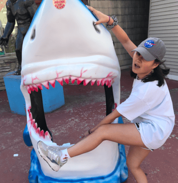

Group9
Meet the Creators
Chibueze Onyenemezu
Chelewynne Shuart
Chibueze Onyenemezu is a fourth-year undergraduate at Northwestern University studying computer engineering. Experts around the world laud his academic achievements and claim "he is a computer whisperer." Onyenemezu himself even claims they speak to him. In 2018 he once told media executives the latest model of Dell "told him what to order for lunch, and saved him from food poisoning."
Chelewynne Shuart is a fourth-year undergraduate at Northwestern University pursuing a degree in electrical engineering and radio, television, film, with a minor in commercial music. Her academic record continuously perplexes experts, driving them to ask questions like, "What is commercial music? Is it like music for commercials?" and "What on earth are you going to do with that degree combination?"
Contact us @ ChibuOnyenemezu2023@u.northwestern.edu and chelewynneshuart2023@u.northwestern.edu